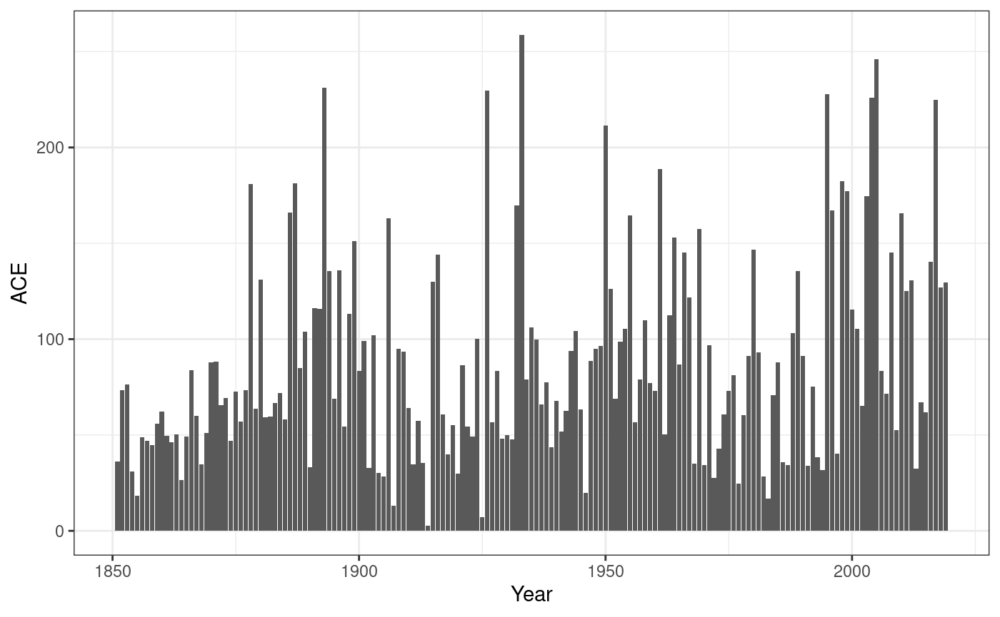

Accumulated Cyclone Energy (ACE)
Tim Trice
June 27, 2017
Source:vignettes/accumulated_cyclone_energy.Rmd
accumulated_cyclone_energy.Rmd## Warning in system("timedatectl", intern = TRUE): running command 'timedatectl'
## had status 1ACE or Accumulated Cyclone Energy is a method of measuring energy of a cyclone or for an entire season. It is calculated by the formula
\[ \text{ACE} = 10^{-4}\sum{v^2_\text{max}} \]
where \(v_\text{max}\) is the wind speed in knots. Values may only be used when a storm is a tropical system with winds of at least 35 knots. Additionally, only six-hour intervals are used.
To calculate ACE you would want to use the fstadv dataset and apply the following rules:
- since forecast/advisory products are typically issued at 03:00, 09:00, 15:00 and 21:00 UTC filter out odd hours
-
Statusis Tropical Storm or Hurricane. -
Windis not NA - group by
Key - select
Wind
fstadv <- fstadv %>%
filter(hour(Date) %in% c(3, 9, 15, 21),
Status %in% c("Tropical Storm", "Hurricane"),
!is.na(Wind)) %>%
group_by(Key) %>%
select(Name, Wind)## Adding missing grouping variables: `Key`Now let’s summarise our dataset with new variable ACE.
fstadv %>%
summarise(Name = last(Name),
ACE = sum(Wind^2) * 1e-04) %>%
arrange(desc(ACE)) %>%
top_n(10)## Selecting by ACE## # A tibble: 10 x 3
## Key Name ACE
## <chr> <chr> <dbl>
## 1 AL092004 Ivan 69.9
## 2 AL112017 Irma 66.6
## 3 AL132003 Isabel 62.5
## 4 AL142016 Matthew 48.0
## 5 AL062004 Frances 46.9
## 6 AL152017 Maria 44.6
## 7 AL091999 Gert 44.0
## 8 AL112010 Igor 42.9
## 9 AL102003 Fabian 42.6
## 10 EP071999 Dora 42.2This matches somewhat well with Wikipedia and other sources. But, you may notice we’re missing some storms. rrricanes currently only holds data back to 1998; this data is considered “real-time”.
A companion package, HURDAT is available in CRAN that has data for all cyclones dating back as far as 1851. This package has less data than rrricanes. But, as it is based on a post-storm reanalysis project, the data is more accurate.
Let’s revisit the top 10 using HURDAT:
AL %>%
filter(hour(DateTime) %in% c(0, 6, 12, 18),
Status %in% c("TS", "HU"),
!is.na(Wind)) %>%
group_by(Key) %>%
summarise(Name = last(Name),
ACE = sum(Wind^2) * 1e-04) %>%
arrange(desc(ACE)) %>%
top_n(10)## Selecting by ACE## # A tibble: 10 x 3
## Key Name ACE
## <chr> <chr> <dbl>
## 1 AL031899 UNNAMED 73.6
## 2 AL092004 IVAN 71.5
## 3 AL112017 IRMA 64.9
## 4 AL091893 UNNAMED 63.5
## 5 AL132003 ISABEL 63.3
## 6 AL041926 UNNAMED 60.9
## 7 AL141932 UNNAMED 59.8
## 8 AL041906 UNNAMED 56.0
## 9 AL041957 CARRIE 55.8
## 10 AL091966 INEZ 54.6A couple of things to notice here:
- in
HURDAT, the common times used are 00:00, 06:00, 12:00 and 18:00 UTC - Our list is more comprehensive than the Wikipedia list as that list only measures storms after 1950.
ACE is slightly higher and that could be for a number of reasons. For example, on re-analysis the Hurricane Research Division may have determined a cyclone was actually tropical (shown in HURDAT) when initially it was believed to be extratropical (as shown in rrricanes). Or, and more likely, they determined through additional data that a storm was actually stronger than originally though.
You can also calculate ACE for a season. Instead of grouping by Key we group by Year. I’ll stick with HURDAT in this example.
(df <- AL %>%
mutate(Year = year(DateTime)) %>%
filter(hour(DateTime) %in% c(0, 6, 12, 18),
Status %in% c("TS", "HU"),
!is.na(Wind)) %>%
group_by(Year) %>%
summarise(ACE = sum(Wind^2) * 1e-04) %>%
arrange(desc(ACE))) %>%
top_n(10)## Selecting by ACE## # A tibble: 10 x 2
## Year ACE
## <dbl> <dbl>
## 1 1933 259.
## 2 2005 246.
## 3 1893 231.
## 4 1926 230.
## 5 1995 228.
## 6 2004 226.
## 7 2017 225.
## 8 1950 211.
## 9 1961 189.
## 10 1998 182.This also matches relatively well with that on Wikipedia and other sources.

It would certainly seem that tropical cyclone activity ebbs and flows over time.